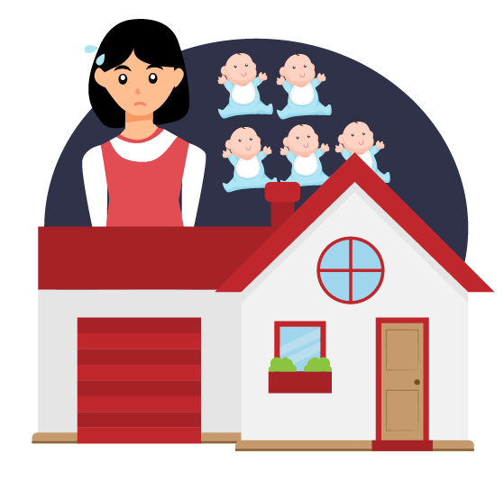

小明和小珍結婚多年，
一直希望能有個孩子。
但是兩人都有工作，孩子該給誰顧，是他們遲遲未生的原因。
如果選擇...
居家式托育
小孩由其三親等內親屬以外的人員
在居家環境中提供收費的托育服務
目前分成兩種類型：
／在宅保母／
把小孩送到保母家照顧
／到府保母／
請保母到家中照顧小孩
雖然居家式托育可以自行決定托育時間，小明和小珍也不用擔心加班時小孩沒人顧。
但是保母收費高昂，
成為生活開銷的一大負擔。
還要擔心保母是否會虐待小孩
如果選擇...
機構式托育
把小孩交給公立托嬰中心
或是私立托嬰中心照顧，
但是機構式托育收托規模大，一名托育人員可能要同時照顧五個幼兒。每個幼兒獲得的照顧品質將受影響。

而且理想的公立托嬰中心
名額難搶，不一定進的去
換成私立托嬰中心，和居家式托育
收費相同，照顧品質也沒有比較好
幸好，最近出現了一種新的托育服務
第三種選擇——
社區公共托育家園
由政府提供場地，
並委託非營利組織經營。
目前多利用國中小閒置空間。
社區公共托育家園
由3名托育人員照顧10名幼兒，
具有居家式托育照顧比低的特性。
同時也具有機構式托育中
機構運作透明化的優點
有了新的托育選擇，小明和小珍終於能放心，計畫生下第一胎。